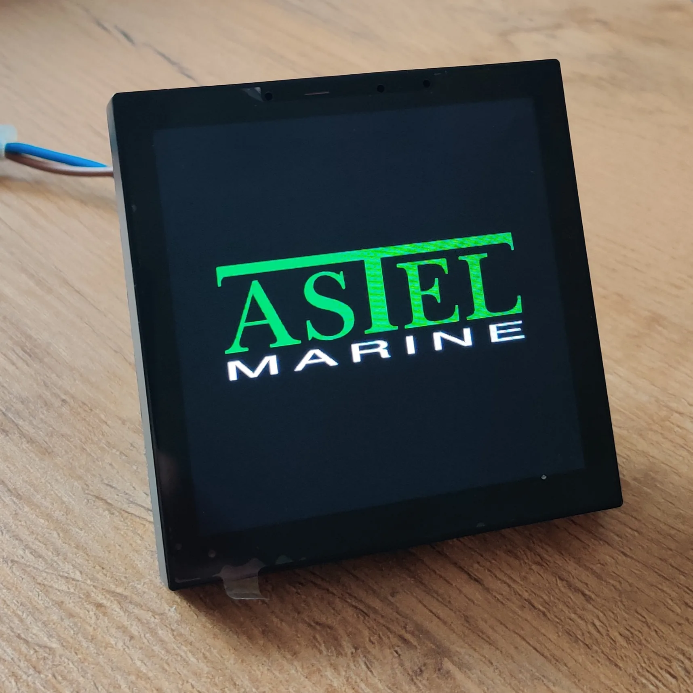
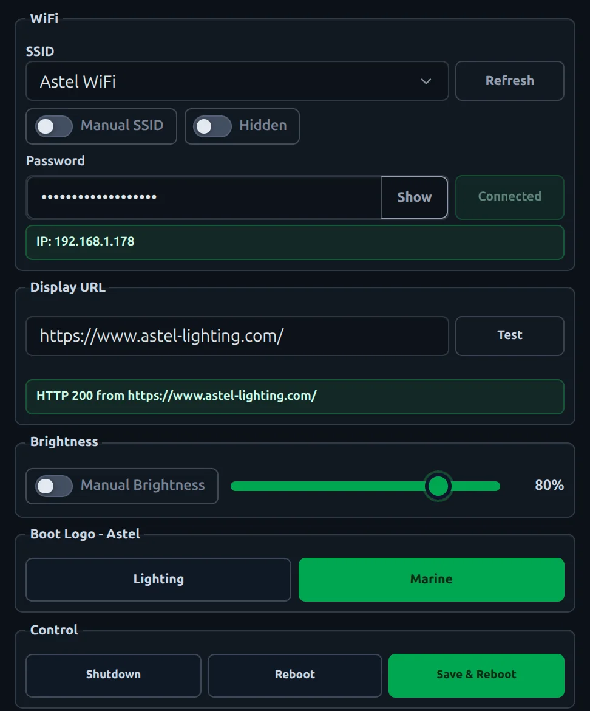
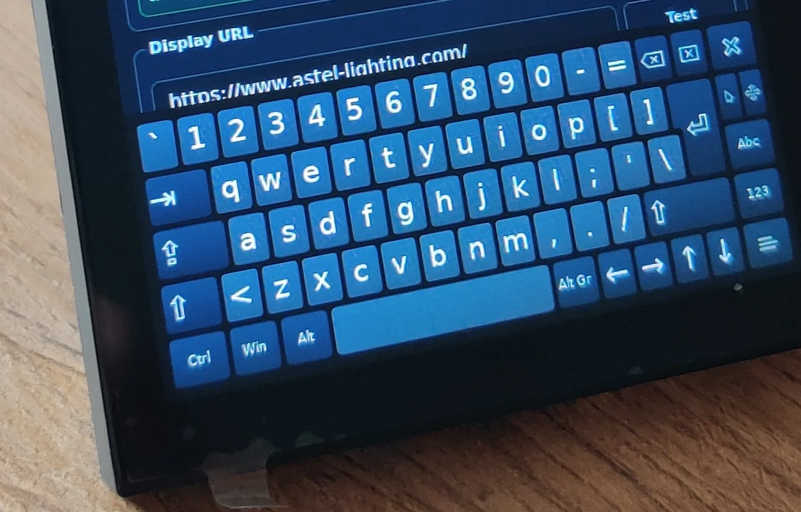

Short press
Refreshes the displayed web page.
Transforms a standard Portworld touchscreen into a branded, configurable, recoverable ASTEL kiosk.
Setup, deploy, recover
Read docs
01
I started with a standard Portworld YC-SM41P touchscreen running the manufacturer's Debian image. The hardware worked, but the software wasn't production-ready.
I removed unnecessary startup services and configured the device to boot straight into kiosk mode.
02
I created a custom Linux session that launches Chromium in fullscreen kiosk mode. Before opening the target page, it waits for a network connection and validates the system clock — preventing connection and certificate errors at startup.
The unusual 480×480 display caused several layout problems. I fixed Chromium's window size, hidden content, cursor visibility, and disabled pinch-to-zoom.
03
I built a local setup interface using Flask, HTML, CSS, and JavaScript, designed for the small square touchscreen — no external keyboard or computer needed.


04
The WiFi module kept trying WPA3 on mixed WPA2/WPA3 networks, triggering long timeouts. I fixed this with explicit WPA2 profiles and a small systemd service to work around a firmware association delay.
These changes dropped cold-boot WiFi from 19s to 10.5s — the kiosk appears roughly ten seconds sooner.
05
I replaced the default boot graphics with ASTEL branding. Since the logo lives in a verified Rockchip boot partition, I built a guarded flashing tool that updates both the image and its integrity hash.
The panel has a single hardware button, so I gave it two recovery functions without exposing the Linux desktop.
Refreshes the displayed web page.
Clears settings and returns the device to setup mode.
06
I started with manual testing on one device. As it stabilized, I moved everything into a structured repo with a repeatable deployment process.
Fresh devices provision over ADB; updates deploy over SSH. The same process works on Linux and Windows, with backups and guards for boot-critical changes.
During development, raw image restoration wiped the device's boot chain — I recovered it using the board's MaskROM pins and the manufacturer's official image. The final process avoids raw flashing entirely: official image first, then automated deployment.
07
A dedicated ASTEL kiosk — branded, configurable, recoverable, and straightforward to deploy.
Embedded Linux, frontend UI, systemd services, hardware debugging, network troubleshooting, and deployment automation — all in one project.